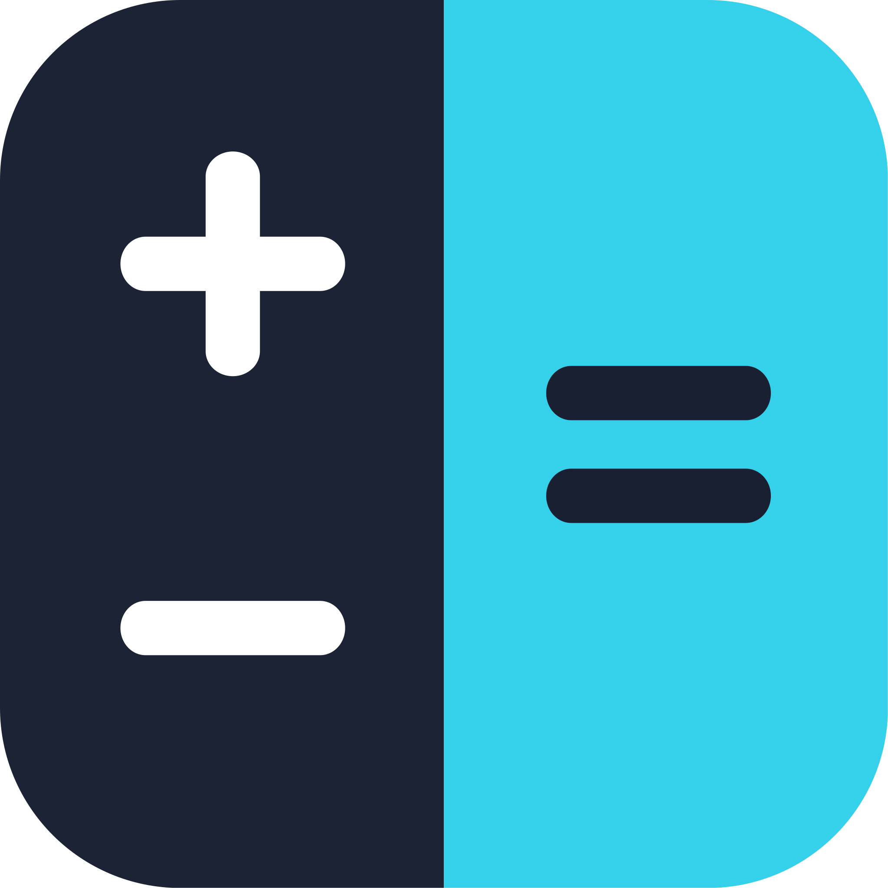

Numera
Precise RPN Calculator
About Numera
Numera is a scientific calculator for iPhone and iPad built around one idea: give engineers, scientists, and students a calculator that doesn't force them into a single way of thinking. Switch freely between Reverse Polish Notation (RPN) and Traditional algebraic entry — Numera is one of the only calculator apps that fully supports both, with dedicated layouts for each rather than a bolted-on mode toggle.
RPN traces back to the classic HP calculators of the 1970s and 80s: instead of typing "3 + 4 =", you enter the numbers first and the operation last — 3, Enter, 4, +. No parentheses, no operator precedence to puzzle over, and once it clicks, it's noticeably faster for real calculation work. Numera carries that lineage forward, reimagined for a touchscreen: a live, multi-line stack display you can see and manipulate directly, and layouts designed for a phone or tablet rather than a 1980s LCD.
If RPN isn't your thing — or you're coming from a traditional calculator — Numera's Traditional algebraic mode is a first-class alternative, not an afterthought: dedicated layouts, not a bolted-on toggle.
Precision that matters
Most calculator apps compute in double-precision floating point — about 15-17 reliable digits. Numera's arithmetic engine works in arbitrary precision, carrying 34 significant digits by default, so long chains of calculation don't quietly erode your accuracy.
Features
- Full RPN mode with stack — swap, roll, drop, pick
- Traditional algebraic entry as a first-class alternative, not an afterthought
- Complete scientific function set: trigonometry, logarithms, exponentials, roots, powers, factorials, combinations, permutations, percentages
- Unit and currency conversion
- Date/Time calculations and live, DST-aware timezone conversion
Numera Pro
A one-time unlock — no subscription:
- Ad-free
- Variables — store and recall values in named registers
- Programmer mode — hexadecimal, octal, and binary with full bitwise operations
- Fraction mode — perform calculations with fractions and equations
- Unlimited calculation history
The free version is fully functional for everyday scientific calculation.
User guide
Learn about input modes, calculator modes, variables, conversions and hidden shortcuts in the Numera User Guide. The same guide is available inside the app.
Frequently asked questions
How do I restore my Numera Pro purchase?
Open Settings and tap Restore Purchase, signed in with the same Apple Account used to buy Numera Pro. You can also tap Restore Purchase on the Numera Pro screen.
How do I learn about the features of Numera?
Help Hint button: tap the ? button in the upper-left corner of the calculator to enter Help Hint mode. The calculator freezes, and tapping any button shows a popup describing what it does. Tap the ? again, or the popup, to leave Help Hint mode.
User guide: in the app, open Settings and tap the User Guide button at the top. You can also access it here at Numera User Guide.
What does Numera Pro include?
A one-time purchase, with no subscription: variables, Programmer layouts (hex, octal, binary and bitwise operations), Fraction and equation mode, full calculation history, and all future Pro features. Pro also removes advertising.
How do I switch between RPN and traditional input?
Go to Settings → Input Mode. You can switch at any time, and your current value carries over. See the user guide for how RPN works.
How do I change between Standard, Scientific, Fraction and Programmer modes?
Go to Settings → Calculator Mode.
What do the Shift and Alpha keys do?
Each button can carry alternate functions in its corners. Use the Shift keys to reach them, or the Alpha key to pick variable names. You can also press a button and slide toward the corner holding the action you want. Tap the ? icon in the top-left status bar, then tap any button to see what it does.
Why does the display show fewer digits than I expect?
Numera rounds the display to your decimal-places setting but keeps full precision internally. Tap the value on screen to toggle between the rounded and the full-precision display. Change the number of decimal places displayed in Settings.
Do currency conversions need an internet connection?
Currency conversions use live exchange rates, so they need a connection to update.
Where is my data stored?
Your calculations, history, variables and settings are stored only on your device. See the Privacy Policy for details.
Screenshots
Traditional scientific mode Standard traditional mode RPN scientific mode Currency conversions Unit conversions Date & time mode Time zone conversions Programmer mode Calculation history Settings